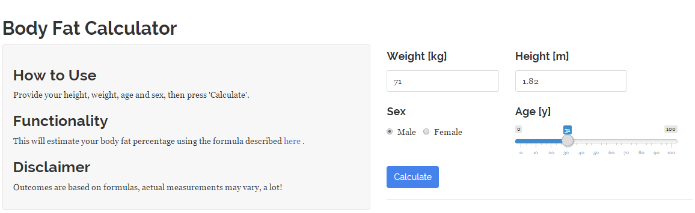

The body fat percentage calculator is an application written using Shiny and R
It's based on a simple formula used to demonstrate the abilities of Shiny and Slidify as part of the Developing Data Products Coursera course
It will require some personal user input in order to work properly, however, it will be initialized with some example values
It's guaranteed to protect your privacy, probably ;-)
Body Fat Percentage Calculator
Peer Assessment - Part 2
Dennis Hunziker
What is the Body Fat Percentage Calculator?
Why should anybody use it?
The first step in solving a problem is knowing a problem
According to Shape Up America, there are various different health risks associated with either too low or too high levels of body fat
Too little body fat:
- Is linked to problems with normal, healthy functioning in both men and women.
- Can lead to problems with reproduction in women.
Too much body fat:
- Increases the risk of many diseases, including type 2 diabetes, high blood pressure, stroke, heart disease, and certain cancers.
- When located around the abdomen, increases the risk even further of developing the above conditions.
User Interface
Calculate your own body fat percentage by accessing the UI here
The formula used requires a users weight and height for calculating the BMI
Age, sex and the previously calculated BMI are used to estimate a users body fat percentage

Results
The American Council on Exercise defines the following 5 categories for the level of body fat
There is no upper limit for Obese, I've chosen 40 for the sake of limiting the X-Axis of the plot
Try the application now to see your results!